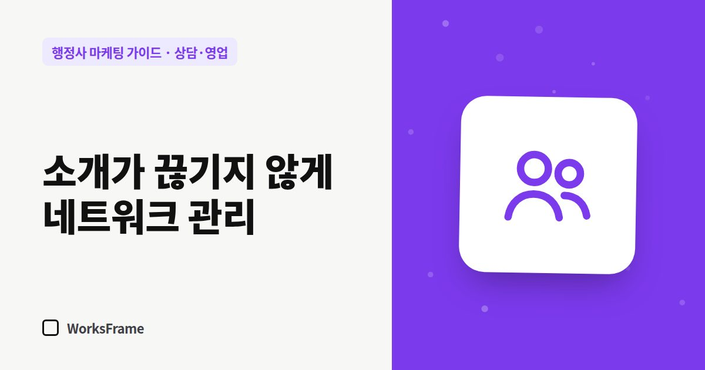

상담·영업
소개가 끊기지 않게 — 행정사 기존 고객과 협업 네트워크 관리
한 줄 답
일이 끝날 때 다음 기한을 알려 드리고 명함 두 장을 드리세요. 세무사·노무사·중개사처럼 업무가 맞닿는 전문가와 서로 소개하는 관계를 만드세요.

광고와 검색으로 들어오는 문의가 늘어도, 행정사 사무소의 든든한 기반은 여전히 소개입니다. 소개는 우연이 아니라 관리할 수 있습니다.
기존 고객이 다시 찾게
많은 행정 업무는 한 번으로 끝나지 않습니다. 체류기간 연장, 허가 갱신, 변경 신고처럼 다음 기한이 있습니다.
- 업무가 끝날 때 다음 기한을 함께 안내
- 기한 한두 달 전에 짧은 안내 연락 — 이미 거래한 고객에게 같은 업무 안내는 받아들이기 쉽습니다 (광고성 연락은 규정 확인)
- 결과 안내와 함께 명함 두 장 — “주변에 필요한 분께 전해 주세요”
협업 네트워크
행정사 업무는 다른 전문가의 업무와 맞닿아 있습니다.
| 협업 상대 | 이어지는 지점 |
|---|---|
| 세무사 | 사업 시작·인허가, 외국인 고용 사업장 |
| 노무사 | 외국인 근로자 고용, 사업장 인허가 |
| 공인중개사 | 공장·상가 임대, 토지 개발 |
| 건축사·설계사무소 | 개발행위, 공장 설립 |
| 변호사 | 행정사 업무 범위를 넘는 분쟁 |
- 먼저 소개해 줄 수 있는 것을 생각하세요. 받기만 하는 관계는 오래가지 않습니다.
- 서로의 업무 범위를 존중하고, 범위를 넘는 일은 정확히 넘기기
소개가 쉬워지는 준비
- 한 문장 소개 — “○○시에서 외국인 고용 사업장 서류를 주로 하는 행정사입니다”
- 소개받은 사람이 확인할 홈페이지
- 소개로 온 고객에게 누구 소개인지 묻고, 소개해 준 분께 감사 인사
소개 기록
소개가 어디서 오는지 기록하면 어떤 관계에 시간을 쓸지 보입니다. 상담 기록에 “유입 경로” 칸 하나만 추가하세요.
자주 묻는 질문
소개해 준 분께 사례를 드려도 되나요?
업종과 관계 법령에 따라 문제가 될 수 있습니다. 금전 대가보다는 감사 인사와 상호 소개로 관계를 유지하는 편이 안전합니다.
협업 상대는 어떻게 만나나요?
지역 모임, 협회 교육, 업무로 만난 전문가부터 시작하세요. 한 번에 많이보다 서너 곳과 깊게가 효과적입니다.